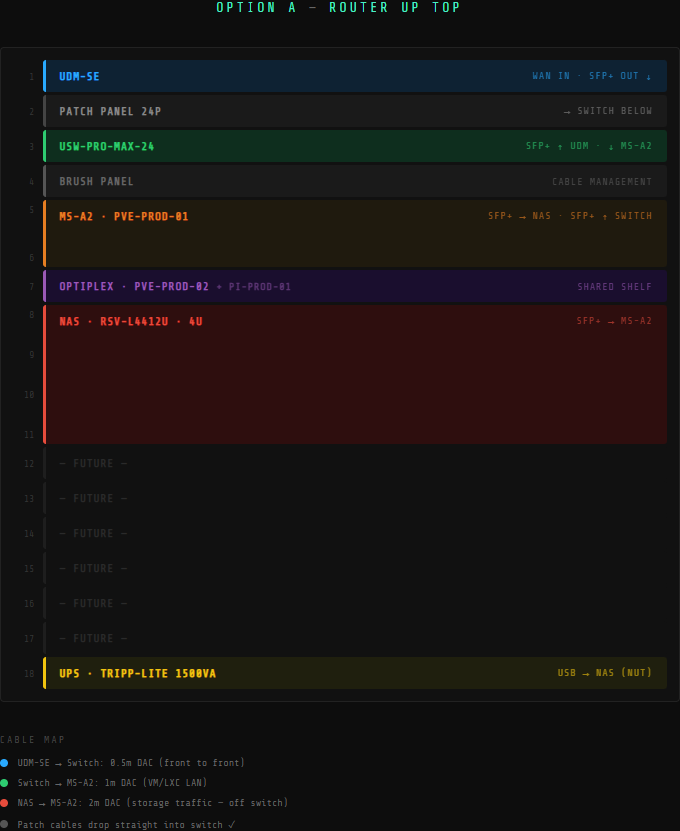

Rack Layout¶
Last Updated: 2026-02-28 Rack: StarTech 4POSTRACK18U (18U open-frame) Status: Planned — hardware arriving, not yet physically built
Update this file once everything is physically racked and cabled.
Unit Layout¶

U1 │ UniFi UDM-SE │ Router / Firewall
U2 │ UniFi UP-PATCH-24 │ Patch Panel (keystone)
U3 │ UniFi USW-Pro-Max-24 │ Core Switch
U4 │ Brush Panel │ Cable management
U5 │ Minisforum MS-A2 │ pve-prod-01 (2U custom bracket)
U6 │ Minisforum MS-A2 │ ↑ continued
U7 │ Dell Optiplex 3070 + Pi │ pve-prod-02 (1U shelf) + pi-prod-01 sharing shelf
U8 │ Rosewill RSV-L4412U │ nas-prod-01 (4U)
U9 │ Rosewill RSV-L4412U │ ↑ continued
U10 │ Rosewill RSV-L4412U │ ↑ continued
U11 │ Rosewill RSV-L4412U │ ↑ continued
U12 │ [Empty] │
U13 │ [Empty] │
U14 │ [Empty] │
U15 │ [Empty] │
U16 │ [Empty] │
U17 │ [Empty] │
U18 │ Tripp-Lite SMART1500LCDXL │ UPS (bottom)
DAC Cable Map¶
| Cable | Length | From | To | Purpose |
|---|---|---|---|---|
| 10Gtek DAC | 0.5M | UDM-SE SFP+ | Switch SFP+ | WAN uplink |
| Cable Matters DAC | 1M | Switch SFP+ | MS-A2 SFP+ (Port 1) | VM/LXC LAN traffic |
| Cable Matters DAC | 2M | NAS SFP+ (X710 Port 1) | MS-A2 SFP+ (Port 2) | Storage traffic — dedicated, off LAN switch |
Notes:
- 2M DAC for NAS ↔ MS-A2 accounts for RSV-L4412U sliding rail extension slack (~1.5M actual path + margin)
- Storage traffic intentionally kept off the switch — isolated 10GbE link between NAS and primary compute only
RJ45 Uplinks to Switch¶
| Device | Port Type | Purpose |
|---|---|---|
| UDM-SE | 2.5GbE RJ45 | LAN downlink to switch (in addition to SFP+ uplink) |
| MS-A2 | 2.5GbE RJ45 | VM/LXC LAN traffic |
| nas-prod-01 | 2.5GbE RJ45 (onboard Intel, TUF Z690) | NAS management + Synology replication traffic |
| pve-prod-02 | 1GbE RJ45 | Optiplex management + all traffic |
| pi-prod-01 | 1GbE RJ45 | Pi management |
UPS Outlet Map¶
Tripp-Lite SMART1500LCDXL has 8 battery-backed outlets. 5 devices, 3 outlets spare.
| Outlet | Device | Notes |
|---|---|---|
| 1 | UDM-SE | |
| 2 | USW-Pro-Max-24 | |
| 3 | pve-prod-01 (MS-A2) | |
| 4 | pve-prod-02 (Optiplex) | |
| 5 | nas-prod-01 | USB cable from UPS → NAS for NUT |
| 6 | pi-prod-01 | Via USB-C power adapter |
| 7 | [Spare] | |
| 8 | [Spare] |
Notes:
- UPS USB data cable connects to nas-prod-01 — NUT server runs here and signals all other hosts to shut down gracefully on power loss
- Shutdown order: Proxmox VMs + LXCs first → pve-prod-01 + pve-prod-02 → nas-prod-01 last
Patch Panel — Structured Cabling¶
UniFi UP-PATCH-24 at U2. 7 wall runs terminate here via Cat6 shielded keystone couplers.
| Port | Run | Destination |
|---|---|---|
| 1–7 | Wall runs | (fill in — label each run when terminated) |
| 8–24 | Blank keystone inserts | Empty |
Short 0.5ft Monoprice SlimRun Cat6 patch cables run from patch panel (U2) down to switch (U3).
Notes & Reminders¶
- Label every cable before or during installation — back out is painful without labels
- Verify all DAC links are up and showing 10GbE in UniFi and Proxmox before moving to Phase 1 software config
- RSV-L4412U ships with sliding rails — test rail extension before finalizing DAC cable lengths
- Label both sides: Wall jack label → Patch panel port number → Switch port number
- Document it in: homelab-docs → network/physical_topology.md